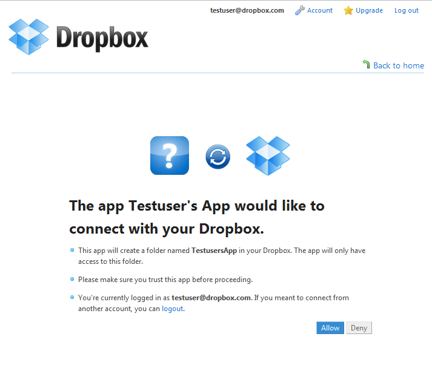

Adding authentication to your app
Dropbox authentication is compliant with the OAuth v1 specification. There are plenty of materials and libraries you can use to get up to speed on OAuth quickly, but using the methods included with the Python SDK, you don't have to start from scratch.
In this tutorial, we're going to walk through some sample code that shows you how to authenticate using the SDK. Feel free to follow along this tutorial by copying and pasting the given code into your own tutorial.py or scroll to the bottom to see the code in its entirety.
The first thing you have to do is find your app key and secret pair. As described in the Getting Started guide, the app key and secret are used to authenticate a Dropbox session and must be included with every API call. You can find these keys in the Setup tutorial or via the My Apps section of the Dropbox website. Once you have your keys, we'll use them to access your Dropbox account and the Dropbox API.
Configure a session object
As discussed in the Setup tutorial, when you create an app, you'll be prompted to decide whether you want to create your own app folder in the user's Dropbox (app_folder - recommended) or whether you want full Dropbox access (dropbox). Be sure to insert your choice as the access_type parameter when configuring a session object. And you'll need to include your app key and secret as well.
# Include the Dropbox SDK libraries
from dropbox import client, rest, session
# Get your app key and secret from the Dropbox developer website
APP_KEY = 'INSERT_APP_KEY_HERE'
APP_SECRET = 'INSERT_SECRET_HERE'
# ACCESS_TYPE should be 'dropbox' or 'app_folder' as configured for your app
ACCESS_TYPE = 'INSERT_ACCESS_TYPE_HERE'
sess = session.DropboxSession(APP_KEY, APP_SECRET, ACCESS_TYPE)
Get a request token
Now we're all set to start authenticating. We'll start by using the session object to get a request token via the obtain_request_token SDK method.
request_token = sess.obtain_request_token()
User authentication and authorization
With a request token in hand, it's time for the user to authorize our app. To do this, we'll send the user to the Dropbox website to allow your app access to their Dropbox account. The request token is passed to build_authorize_url to create a unique authorization URL to send the user to and, optionally, specify the website to return the user to after they finish granting access to your app.
url = sess.build_authorize_url(request_token)
print "url:", url
print "Please visit this website and press the 'Allow' button, then hit 'Enter' here."
raw_input()
For the purpose of this tutorial, and to avoid the hassle of setting up a web server environment, we're just printing the URL and asking the user to press the Enter key to confirm that they've authorized your app. However, in most real-world apps, you'll probably want to automatically send the user to the authorization URL, and probably also pass in a callback URL so that the user is seamlessly redirected back to your app after pressing a button.
The URL created ensures the user is logged in to Dropbox and presents a web page that looks something like this:

We don't want anyone other than the user who requested access using this URL, which is why the request tokens are only live for five minutes. If the user sits on this link for greater than five minutes, we'll politely request they return to your app to try again.
Get an access token
Once the user has successfully granted permission to your app, we can upgrade the now-authorized request token to an access token. We'll do that by passing the request token via obtain_access_token:
# This will fail if the user didn't visit the above URL and hit 'Allow'
access_token = sess.obtain_access_token(request_token)
The access token is all you'll need for all future API requests on behalf of this user, so you should store it away for safe-keeping (even though we don't for this tutorial). By storing the access token, you won't need to go through these steps again unless the user reinstalls your app or revokes access via the Dropbox website.
Now that the hard part is done, all you'll need to sign your other API calls is to to pass the session object to DropboxClient and attach the object to your requests.
Let's try this out by calling account_info which will return a dictionary with information about the user's linked account:
client = client.DropboxClient(sess)
print "linked account:", client.account_info()
Wrap it up
If you've made it this far, you have all the tools you need to see the basics of the API in full effect. For your reference, here's the entirety of tutorial.py so far:
# Include the Dropbox SDK libraries
from dropbox import client, rest, session
# Get your app key and secret from the Dropbox developer website
APP_KEY = 'INSERT_APP_KEY_HERE'
APP_SECRET = 'INSERT_SECRET_HERE'
# ACCESS_TYPE should be 'dropbox' or 'app_folder' as configured for your app
ACCESS_TYPE = 'INSERT_ACCESS_TYPE_HERE'
sess = session.DropboxSession(APP_KEY, APP_SECRET, ACCESS_TYPE)
request_token = sess.obtain_request_token()
url = sess.build_authorize_url(request_token)
# Make the user sign in and authorize this token
print "url:", url
print "Please visit this website and press the 'Allow' button, then hit 'Enter' here."
raw_input()
# This will fail if the user didn't visit the above URL and hit 'Allow'
access_token = sess.obtain_access_token(request_token)
client = client.DropboxClient(sess)
print "linked account:", client.account_info()
Now that we're authenticated, let's see about making a call to Dropbox. In the next tutorial, we'll upload a file to Dropbox, get its metadata, and then download it back to our app.
Dropbox authentication is compliant with the OAuth v1 specification. There are plenty of materials and libraries you can use to get up to speed on OAuth quickly, but using the methods included with the Ruby SDK, you don't have to start from scratch.
In this tutorial, we're going to walk through some sample code that shows you how to authenticate using the SDK. Feel free to follow along this tutorial by copying and pasting the given code into your own tutorial.rb or scroll to the bottom to see the code in its entirety.
The first thing you have to do is find your app key and secret pair. As described in the Getting Started guide, the app key and secret are used to authenticate a Dropbox session and must be included with every API call. You can find these keys in the Setup tutorial or via the My Apps section of the Dropbox website. Once you have your keys, we'll use them to access your Dropbox account and the Dropbox API.
Configure a session object
As discussed in the Setup tutorial, when you create an app, you'll be prompted to decide whether you want to create your own app folder in the user's Dropbox (app_folder - recommended) or whether you want full Dropbox access (dropbox). Be sure to insert your choice as the access_type parameter when configuring a session object. And you'll need to include your app key and secret as well.
# This references the Dropbox SDK gem install with "gem install dropbox-sdk"
require 'dropbox_sdk'
# Get your app key and secret from the Dropbox developer website
APP_KEY = 'INSERT-APP-KEY-HERE'
APP_SECRET = 'INSERT-APP-SECRET-HERE'
# ACCESS_TYPE should be ':dropbox' or ':app_folder' as configured for your app
ACCESS_TYPE = :INSERT_ACCESS_TYPE_HERE
session = DropboxSession.new(APP_KEY, APP_SECRET)
Get a request token
Now we're all set to start authenticating. We'll start by using the session object to get a request token via the get_request_token SDK method.
session.get_request_token
That's all there is to it. The Ruby SDK automatically attaches your new request token to your session object.
User authentication and authorization
With a request token in hand, it's time for the user to authorize our app. To do this, we'll send the user to the Dropbox website to allow your app access to their Dropbox account. The request token is passed to get_authorize_url to create a unique authorization URL to send the user to and, optionally, specify the website to return the user to after they finish granting access to your app.
authorize_url = session.get_authorize_url
# make the user sign in and authorize this token
puts "AUTHORIZING", authorize_url
puts "Please visit this website and press the 'Allow' button, then hit 'Enter' here."
gets
For the purpose of this tutorial, we're just printing the URL and asking the user to press the Enter key to confirm that they've authorized your app. However, in most real-world apps, you'll probably want to automatically send the user to the authorization URL, and probably also pass in a callback URL so that the user is seamlessly redirected back to your app after pressing a button.
The URL created ensures the user is logged in to Dropbox and presents a web page that looks something like this:
We don't want anyone other than the user who requested access using this URL, which is why the request tokens are only live for five minutes. If the user sits on this link for greater than five minutes, we'll politely request they return to your app to try again.
Get an access token
Once the user has successfully granted permission to your app, we can upgrade the now-authorized request token to an access token. We'll do that by passing the request token via get_access_token:
# This will fail if the user didn't visit the above URL and hit 'Allow'
session.get_access_token
The access token is all you'll need for all future API requests on behalf of this user, so you should store it away for safe-keeping (even though we don't for this tutorial). By storing the access token, you won't need to go through these steps again unless the user reinstalls your app or revokes access via the Dropbox website.
Now that the hard part is done, all you'll need to sign your other API calls is to to pass the session object to DropboxClient and attach the object to your requests.
Let's try this out by calling account_info, which will return a dictionary with information about the user's linked account:
client = DropboxClient.new(session, ACCESS_TYPE)
puts "linked account:", client.account_info().inspect
Wrap it up
If you've made it this far, you have all the tools you need to see the basics of the Dropbox API in full effect. For your reference, here's the entirety of tutorial.rb so far:
# This references the Dropbox SDK gem install with "gem install dropbox-sdk"
require 'dropbox_sdk'
APP_KEY = 'INSERT-APP-KEY-HERE'
APP_SECRET = 'INSERT-APP-SECRET-HERE'
ACCESS_TYPE = :app_folder #The two valid values here are :app_folder and :dropbox
session = DropboxSession.new(APP_KEY, APP_SECRET)
session.get_request_token
authorize_url = session.get_authorize_url
# Make the user sign in and authorize this token
puts "AUTHORIZING", authorize_url
puts "Please visit that website and hit 'Allow', then hit Enter here."
gets
# This will fail if the user didn't visit the above URL and hit 'Allow'
session.get_access_token
client = DropboxClient.new(session, ACCESS_TYPE)
puts "linked account:", client.account_info().inspect
Now that we're authenticated, let's see about making a call to Dropbox. In the next tutorial, we'll upload a file to Dropbox, get its metadata, and then download it back to our app.
The first thing you have to do is find your app key and secret. As described in the Getting Started guide, the app key and secret are used by a Dropbox session to make API calls. You can find these values in the Setup tutorial or via the My Apps section of the Dropbox website. Once you have your keys, we'll use them to access your Dropbox account and the Dropbox API.
We'll need to put your app key and app secret in your code so we can use them to create a session and access your Dropbox account and the API. Replace INSERT_APP_KEY_HERE and INSERT_SECRET_HERE with your app key and app secret in the code below.
final static private String APP_KEY = "INSERT_APP_KEY_HERE";
final static private String APP_SECRET = "INSERT_SECRET_HERE";
When you created an app, you were prompted to decide whether you wanted to create your own app folder in the user's Dropbox (APP_FOLDER) or whether you wanted full Dropbox access (DROPBOX). Insert your choice here where it says INSERT_APP_ACCESS_TYPE_HERE.
final static private AccessType ACCESS_TYPE = AccessType.INSERT_APP_ACCESS_TYPE_HERE;
Create a Dropbox session
The app keys are in place, now let's use them to create a new session. We'll use this session to create a new DropboxAPI object called mDBApi. You probably want to keep one of these around as an instance variable.
// In the class declaration section:
private DropboxAPI<AndroidAuthSession> mDBApi;
// And later in some initialization function:
AppKeyPair appKeys = new AppKeyPair(APP_KEY, APP_SECRET);
AndroidAuthSession session = new AndroidAuthSession(appKeys, ACCESS_TYPE);
mDBApi = new DropboxAPI<AndroidAuthSession>(session);
Start the authentication process
The next step in the process is for the user to authorize your app through either the official Dropbox mobile app or via the Dropbox mobile web site. The user will be sent to a screen with your app icon and name and buttons to allow or deny access to their Dropbox. If authenticated, your session will have the user's access token pair to use with API calls. Here we get the session and start the authentication process. startAuthentication() is a function that redirects the user to the Dropbox mobile app or, failing to identify its install, redirects to the mobile website for user authorization via the default mobile browser.
// MyActivity below should be your activity class name
mDBApi.getSession().startAuthentication(MyActivity.this);
Return to your app after user authorization
Upon authentication, users are returned to the activity from which they came. To finish authentication after the user returns to your app, you'll need to put the following code in your onResume function.
Please note, it's important that the order and the timing of these calls stay the same. In fact, it might be easier to just copy this code verbatim rather than writing it from scratch.
protected void onResume() {
super.onResume();
// ...
if (mDBApi.getSession().authenticationSuccessful()) {
try {
// MANDATORY call to complete auth.
// Sets the access token on the session
mDBApi.getSession().finishAuthentication();
AccessTokenPair tokens = mDBApi.getSession().getAccessTokenPair();
// Provide your own storeKeys to persist the access token pair
// A typical way to store tokens is using SharedPreferences
storeKeys(tokens.key, tokens.secret);
} catch (IllegalStateException e) {
Log.i("DbAuthLog", "Error authenticating", e);
}
}
// ...
}
The finishAuthentication() method will bind the user's access tokens to the session. You'll now be able to retrieve them via mDBApi.getSession().getAccessTokenPair().
You'll need these tokens again after your app closes, so it's important to save them for future access. If you don't, the user will have to re-authenticate every time they access their Dropbox from your app.
A common way to implement storing keys is through Android's SharedPreferences API. To learn how, check out the Android documentation. In the meantime, for simplicity, the code above pretends the storeKeys function invokes whatever method you'd like to use to store your keys in a more permanent location.
If in the process of authenticating you run into an error message like "Another app on your phone may be trying to pose as the app you are currently using." it means more than one app installed on the phone has a callback activity registered for a single app key (e.g. DBRoulette and the current app you're building). You can fix this error by deleting one of the offending apps or by switching to a new app key.
And that's all you need to perform further API calls. Next up, let's rev the API engine and see what we can do. The next tutorial will go over some of the most common API functionality: uploading, downloading, and retrieving metadata.
Now that you've gotten the SDK building with your project, the next step is to integrate it into your app, allowing users to link their Dropbox accounts to your app. The first step is to find your app's key/secret pair, which can be found on the My Apps page.
Once you have your app key and secret, you can create the DBSession object for your app. To do this, add the following code in your application delegate's application:didFinishLaunchingWithOptions: method:
#import <DropboxSDK/DropboxSDK.h>
...
DBSession* dbSession =
[[[DBSession alloc]
initWithAppKey:@"APP_KEY"
appSecret:@"APP_SECRET"
root:ACCESS_TYPE] // either kDBRootAppFolder or kDBRootDropbox
autorelease];
[DBSession setSharedSession:dbSession];
Somewhere in your app, add an event to launch the Dropbox authentication process, which should look something like this:
- (void)didPressLink {
if (![[DBSession sharedSession] isLinked]) {
[[DBSession sharedSession] link];
}
}
Calling link on the session will open the Dropbox app if it's installed or Safari otherwise. From there, the user will be prompted to link his account to your app with the appropriate access type. Once authenticated, your app will be launched with the URL scheme db-APP_KEY. The easiest way to register for this scheme is right-click on your app's plist file and select Open As → Source Code, and add the following code below the first <dict> tag, substituting APP_KEY with your app's key:
<key>CFBundleURLTypes</key>
<array>
<dict>
<key>CFBundleURLSchemes</key>
<array>
<string>db-APP_KEY</string>
</array>
</dict>
</array>
Now that your app is registered for the correct scheme, you need to add the following code to your application delegate in order to complete the authentication flow:
- (BOOL)application:(UIApplication *)application handleOpenURL:(NSURL *)url {
if ([[DBSession sharedSession] handleOpenURL:url]) {
if ([[DBSession sharedSession] isLinked]) {
NSLog(@"App linked successfully!");
// At this point you can start making API calls
}
return YES;
}
// Add whatever other url handling code your app requires here
return NO;
}
Build and run your app. Find the link button you put in your app and press it. Once you press it, either the Dropbox app or Safari should be launched, and you should have the option to link your app to your Dropbox account. Make sure you are logged in using the same email address you used to create the app keys. Once you link with Dropbox, you should be redirected back to your app. If this happens successfully, you're ready to move on to the next section and start making requests to Dropbox using the SDK.
 iOS
iOS